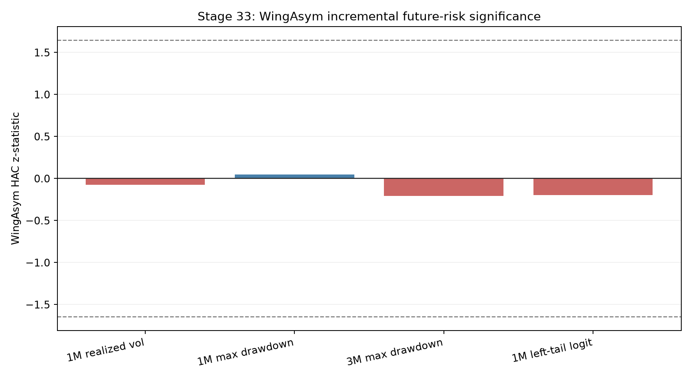
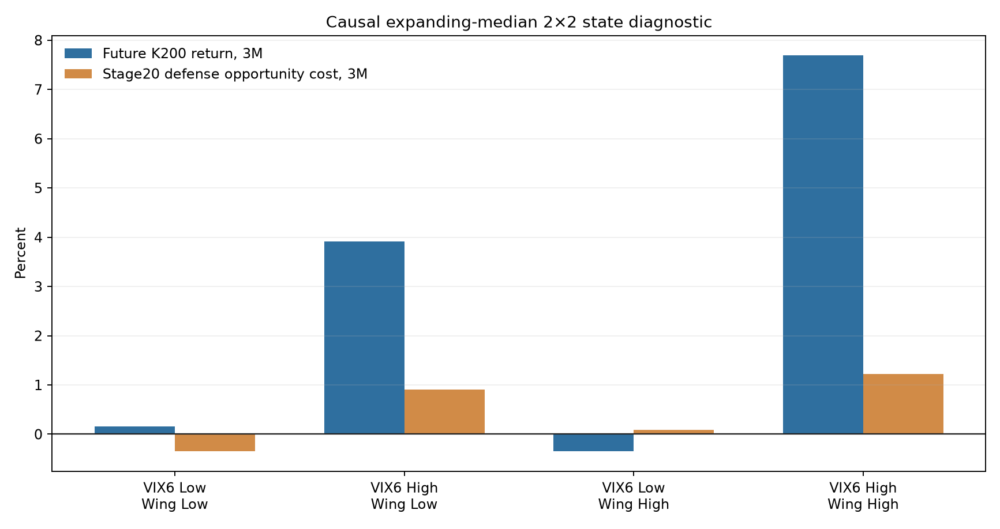

WingAsym 연구 가지 종료
미래위험 증분 게이트와 VIX6 맥락·재진입 게이트가 모두 실패했다. 다음 연구부터는 옵션 공포와 경제적 원천이 다른 데이터로 이동한다.
Stage20은 그대로
CAGR 9.397%
Sharpe 0.987
MDD -14.015%
기대수익, λ, 비중, 오버레이 변경 없음
1. 이번 단계에서 고정한 질문
독립 위험센서
+ recent return + realized vol + macro fragility
목표는 다음 1개월 실현변동성, 다음 1·3개월 최대낙폭, 다음 달 왼쪽꼬리다.
VIX6 맥락·재진입
VIX6 + WingAsym + VIX6×WingAsym + controls
핵심은 상호작용항이다. 양수라면 “공포가 이미 가격에 반영되어 방어가 늦었다”는 해석에 힘이 실린다.
2. 시간 순서를 먼저 잠갔다
왼쪽꼬리 문턱은 매월 그 이전 월수익률만으로 계산한 5% 분위수다. 2×2 상태도 과거 60개월 이상 expanding median을 사용했다. 전체표본 분위수를 뒤에서 가져와 과거에 붙이지 않았다.
3. WingAsym은 미래위험을 더 설명하지 못했다
VIX6와 세 통제변수를 모두 넣은 뒤 WingAsym 계수는 네 목표 모두 0에 가깝고, p값은 0.83~0.96이었다.
| 목표 | 표본 | 표준화 beta | HAC p | 증분 적합도 | 판정 |
|---|---|---|---|---|---|
| 다음 1M 실현변동성 | 231 | -0.00108 | 0.941 | -0.00177 Adj. R² | 실패 |
| 다음 1M 최대낙폭 | 231 | +0.00036 | 0.962 | -0.00334 Adj. R² | 실패 |
| 다음 3M 최대낙폭 | 231 | -0.00110 | 0.835 | -0.00344 Adj. R² | 실패 |
| 다음 달 왼쪽꼬리 | 232 / 사건 8 | -0.0682 | 0.842 | +0.00066 McFadden R² | 실패 |

변동성과 MDD는 양수가 위험 증가다. 90% HAC 구간이 모두 0을 넓게 포함한다.
4. 꼬리위험 분류에서도 VIX6 단독보다 나빠졌다
무가중 로지스틱을 매월 과거자료로 다시 적합했다. 첫 OOS 예측은 훈련표본에 꼬리사건이 3개 쌓인 2018-11이다. 이후 93개월 중 실제 사건은 5개라 오차가 큰 검증이지만, WingAsym을 더한 방향은 개선이 아니었다.
| 모형 | OOS 월 / 사건 | AUC ↑ | Brier ↓ | Log loss ↓ |
|---|---|---|---|---|
| 과거 발생률 | 93 / 5 | 0.402 | 0.05176 | 0.22392 |
| VIX6 단독 | 93 / 5 | 0.570 | 0.05096 | 0.21277 |
| VIX6 + WingAsym | 93 / 5 | 0.430 | 0.05231 | 0.25140 |
| 전체 통제 | 93 / 5 | 0.452 | 0.05405 | 0.28292 |
작은 사건 수 때문에 AUC 하나로 탈락시킨 것이 아니다. 위험회귀의 부호·p값·증분 적합도와 OOS 점수가 모두 같은 결론을 가리킨다는 점을 합쳐 판정했다.
5. 2×2 표만 보면 high-high가 매력적으로 보인다
| 인과적 상태 | 월수 | 향후 1M | 향후 3M | 향후 6M | 방어비용 3M | 방어비용 6M |
|---|---|---|---|---|---|---|
| VIX6 Low / Wing Low | 72 | +0.45% | +0.16% | -0.26% | -0.35% | -0.53% |
| VIX6 High / Wing Low | 64 | +1.04% | +3.91% | +8.68% | +0.91% | +1.60% |
| VIX6 Low / Wing High | 28 | -0.81% | -0.34% | +0.53% | +0.09% | -0.12% |
| VIX6 High / Wing High | 58 | +2.39% | +7.69% | +15.04% | +1.23% | +2.64% |

방어비용은 저장된 Stage14 복리수익에서 Stage20 복리수익을 뺀 값이다. 양수는 Stage20이 방어 때문에 덜 번 정도다.
6. 하지만 상호작용은 반대 부호였다
high-high 평균이 높다는 사실만으로 WingAsym의 독립 역할을 인정할 수 없다. VIX6 수준 자체가 높은 효과와 개별 WingAsym 효과를 떼어내야 한다.
| 목표 | 기간 | 상호작용 beta | HAC p | 가설 부호 | 판정 |
|---|---|---|---|---|---|
| K200 향후수익 | 1M | +0.00088 | 0.849 | + | 유의하지 않음 |
| K200 향후수익 | 3M | -0.01211 | 0.022 | + | 반대 부호 |
| K200 향후수익 | 6M | -0.01349 | 0.079 | + | 반대 부호 |
| Stage20 방어비용 | 1M | +0.00148 | 0.040 | + | 단기 흔적 |
| Stage20 방어비용 | 3M | -0.00208 | 0.197 | + | 실패 |
| Stage20 방어비용 | 6M | -0.00310 | 0.086 | + | 반대 부호 |
7. false positive 직접 검정
Stage20의 KODEX200 비중이 저장된 Stage14보다 낮은 달을 방어월로 두었다. 232개월 중 204개월이 해당했고, 그중 Stage20의 해당 월 수익이 Stage14보다 낮은 달은 106개월이었다. 이 204개월에서 false-positive 로짓을 적합했을 때 상호작용 beta는 +0.110, p값은 0.454였다.
예전에 나온 192/110은 Stage16이 Stage14 동적 λ의 위험축소를 다른 기준선과 비교한 정의다. Stage33은 Stage20을 직접 분석하므로 숫자를 억지로 맞추지 않고 실제 저장 경로끼리 비교했다.
8. 사전 게이트 판정
독립 위험센서 · 실패
- 양의 부호 3/4 이상: 실패
- 양수이면서 p<10% 2개 이상: 실패
- MDD·꼬리 중 하나 유의: 실패
VIX6 맥락·재진입 · 실패
- 3M·6M 상호작용 모두 양수: 실패
- 둘 중 하나 p<10%: 실패
- high-high 방어비용 양수: 통과
- high-high 표본 15개월 이상: 통과
보조표 두 조건은 통과했지만, 독립성을 확인하는 주검정이 실패했다. 따라서 신규 μ, λ, hard rule, 오버레이로 승격하지 않았다.
9. 경제적으로 무엇을 배웠나
Stage32의 “WingAsym은 VIX6와 같은 공포를 다른 온도계로 잰다”는 해석이 미래위험에서도 유지됐다. 보험료계가 위험의 흔적은 보여주지만, 이미 VIX6를 가진 상태에서 새 정보를 더하지 못했다. high-high 반등은 WingAsym의 독립 알파라기보다 높은 공포 수준에서 흔히 나타나는 위험 프리미엄 회수와 겹친다.
여기서 잔차·비선형 변환·새 문턱으로 신호를 살리면 연구 질문이 “독립 정보가 있나?”에서 “어떻게든 유의한 조합을 만들 수 있나?”로 바뀐다. Stage33은 그 선을 넘지 않는 종료점이다.
10. 코드와 산출물
| 파일 | 역할 |
|---|---|
wingasym_risk_context_validation.py | 원자료 로딩, 인과 정렬, 위험목표, HAC, expanding OOS, 2×2, 게이트 |
outputs/validation_report.json | 고정 설계, 모든 결과, 소스·동결파일 해시 |
outputs/future_risk_incremental_regressions.csv | VIX6 이후 WingAsym 미래위험 계수 |
outputs/left_tail_expanding_oos_scores.csv | AUC, Brier, log loss |
outputs/vix6_wing_context_interactions.csv | 수익률·방어비용·false-positive 상호작용 |
outputs/causal_2x2_state_diagnostic.csv | 과거 expanding median 기반 네 상태 |
$py = 'D:\Programming\python_example\Arcana\.venv-llama\Scripts\python.exe' & $py -m strategies.stage33_wingasym_risk_context_validation.wingasym_risk_context_validation
11. 다음부터는 다른 방향으로
옵션 공포 가지는 닫는다. 다음 후보는 VIX6와 겹치지 않는 경제적 원천이어야 한다.